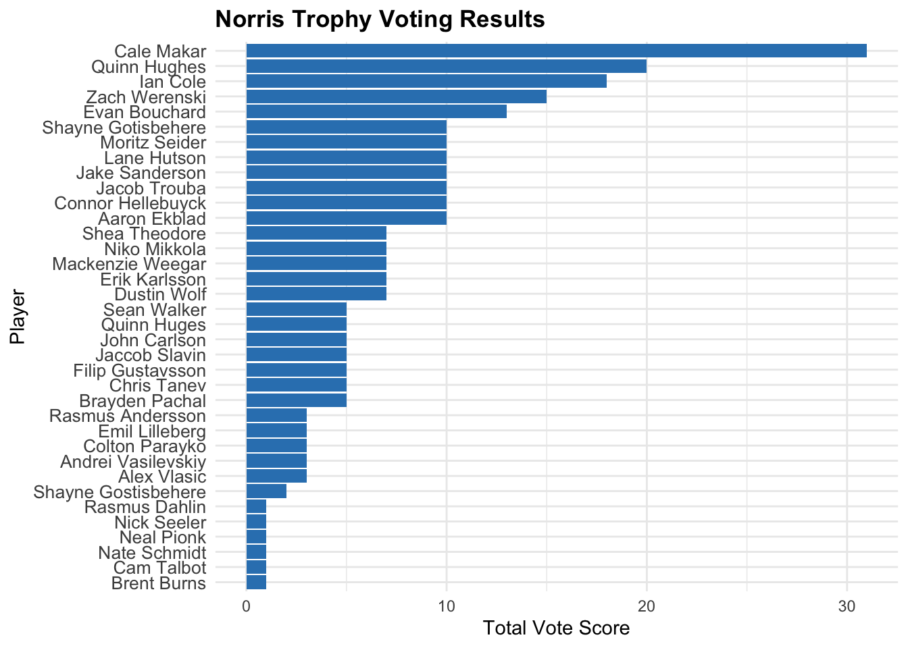

# Add this improved cleaning function before creating the Scores data framestandardize_player_names <-function(name) {# Convert to character if not already name <-as.character(name)# Remove leading/trailing whitespace name <-str_trim(name)# Replace multiple spaces with a single space name <-str_replace_all(name, "\\s+", " ")# Standardize capitalization name <-str_to_title(name)# Remove accents (requires stringi package)if (!requireNamespace("stringi", quietly =TRUE)) {install.packages("stringi") } name <- stringi::stri_trans_general(name, "Latin-ASCII")# Handle specific cases like missing spaces name <-str_replace(name, "Martinnecas", "Martin Necas")return(name)}# Apply the improved cleaning in your data processingAll_Votes <- All_Votes %>%mutate(Player =standardize_player_names(Player) ) %>%mutate(Score =case_when( Rank ==1~10, Rank ==2~7, Rank ==3~5, Rank ==4~3, Rank ==5~1,TRUE~0 ) )# Then continue with your grouping and summarizingScores <- All_Votes %>%group_by(Award.Standard, Player) %>%summarize(Total =sum(Score), .groups ="drop")# Debug duplicates (optional)duplicates <- Scores %>%filter(Award.Standard =="Byng") %>%group_by(Player) %>%filter(n() >1)if(nrow(duplicates) >0) {print("Found duplicates:")print(duplicates)}ggplot(Scores, aes(x =reorder(Player, Total), y = Total)) +geom_col(fill ="#3182bd") +# Use a pleasing blue colorcoord_flip() +facet_wrap(~Award.Standard, scales ="free_y") +# Note: 'scales' not 'scale'labs(title ="NHL Award Voting Results",subtitle ="Players ranked by total vote score in each award category",x ="Player",y ="Total Vote Score" ) +theme_minimal() +theme(strip.background =element_rect(fill ="#f0f0f0"),strip.text =element_text(face ="bold", size =12),axis.text.y =element_text(size =9),panel.spacing =unit(1, "lines") )
# If you want to focus on top players only in each category# to prevent plots from becoming too clutteredtop_n_players <-10Scores_top <- Scores %>%group_by(Award.Standard) %>%slice_max(order_by = Total, n = top_n_players) %>%ungroup()ggplot(Scores_top, aes(x =reorder(Player, Total), y = Total)) +geom_col(fill ="#3182bd") +coord_flip() +facet_wrap(~Award.Standard, scales ="free_y") +labs(title ="NHL Award Voting Results",subtitle =paste0("Top ", top_n_players, " players by vote score in each award category"),x ="Player",y ="Total Vote Score" ) +theme_minimal() +theme(strip.background =element_rect(fill ="#f0f0f0"),strip.text =element_text(face ="bold", size =12),axis.text.y =element_text(size =9),panel.spacing =unit(1, "lines") )
# Apply the standardization function to ensure consistent player namesAll_Votes <- All_Votes %>%mutate(Player =standardize_player_names(Player) ) %>%mutate(Score =case_when( Rank ==1~10, Rank ==2~7, Rank ==3~5, Rank ==4~3, Rank ==5~1,TRUE~0 ) )# Calculate scores with consistent player namesScores <- All_Votes %>%group_by(Award.Standard, Player) %>%summarize(Total =sum(Score), .groups ="drop")# Get list of all awardsawards <-unique(Scores$Award.Standard)# Function to create a plot for a single awardcreate_award_plot <-function(award_name) { award_data <- Scores %>%filter(Award.Standard == award_name)# If there's no data for this award, return NULLif(nrow(award_data) ==0) return(NULL)# Create the plot p <-ggplot(award_data, aes(x =reorder(Player, Total), y = Total)) +geom_col(fill ="#3182bd") +coord_flip() +labs(title =paste(award_name, "Trophy Voting Results"),x ="Player",y ="Total Vote Score" ) +theme_minimal() +theme(plot.title =element_text(face ="bold"),axis.text.y =element_text(size =10) )return(p)}# Create a list to store all the plotsaward_plots <-list()# Generate a plot for each awardfor(award in awards) { award_plots[[award]] <-create_award_plot(award)}# Display each plot (in a non-loop environment like RStudio, # you would typically view these one at a time)# In R Markdown, you can include each plot separately# Example of how to display a specific award plot:award_plots[["Hart"]]
award_plots[["Norris"]]

award_plots[["Vezina"]]
award_plots[["Byng"]]
award_plots[["Calder"]]
award_plots[["Selke"]] # Display the Hart Trophy plot
# To save all plots to filesfor(award in awards) {if(!is.null(award_plots[[award]])) { filename <-paste0("NHL_", award, "_Award_Votes.png")ggsave(filename = filename,plot = award_plots[[award]],width =6,height =8,dpi =300 ) }}
# Create a single matrix combining all awardsall_votes_wide <- All_Votes %>%# Create player-award combinationsmutate(PlayerAward =paste(Player, Award, sep =" - ")) %>%select(Voter, PlayerAward, Score) %>%pivot_wider(names_from = Voter,values_from = Score,values_fill =list(Score =0) ) %>%column_to_rownames("PlayerAward")# Plot the combined heatmap with clusteringheat<-pheatmap( all_votes_wide,main ="Clustered NHL Award Voting Patterns",color =colorRampPalette(brewer.pal(9, "Blues"))(50),cluster_rows =FALSE,cluster_cols =TRUE,display_numbers =FALSE,number_color ="black",fontsize_number =7,fontsize =4,angle_col =45,height =20,width =10)
png(filename ="heatmap.png", width =1000, height =1500, res =200)heatdev.off()